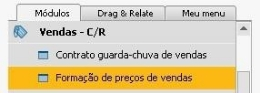
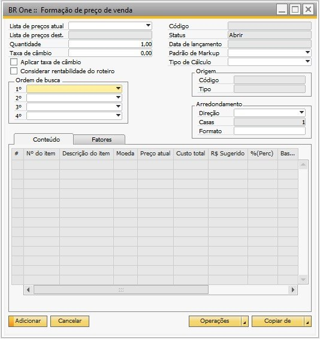
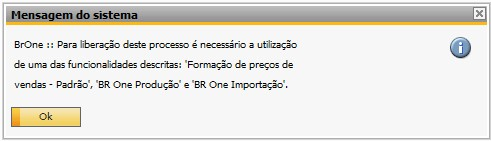
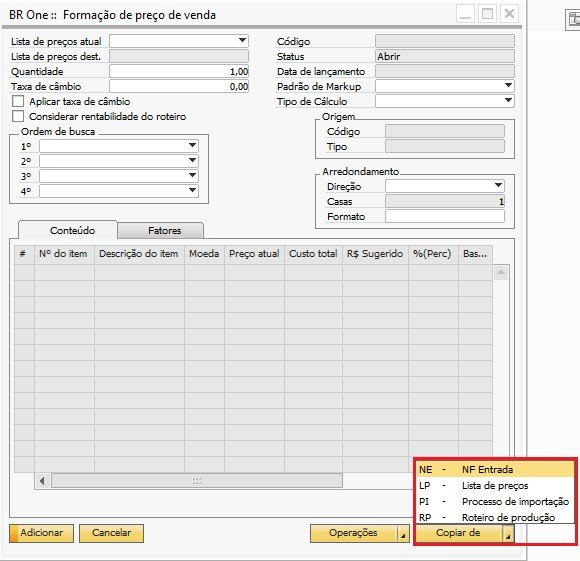

Formação de Preço de Vendas
Para acessar a tela Formação de preços de vendas é necessário ir no menu:
Vendas -> Formação de preços de vendas.
 {kind=link}
{kind=link}
É necessário que esteja liberado uma das seguintes funcionalidades para ter acesso à tela: “Formação de preços de vendas - Padrão”, “BR One Produção” ou “BR One Importação”. Caso o usuário não possua nenhuma dessas funcionalidades e clique no menu indicado, o processo será bloqueado e será exibida a seguinte mensagem:
{kind=link}
BR One :: Para liberação deste processo é necessário a utilização de uma das funcionalidades descritas: Formação de preços de vendas - Padrão, BR One Produção e BR One Importação.
No formulário aberto, primeiramente deve ser marcado o flag Aplicar taxa de câmbio caso ele seja necessário. Ele não poderá ser marcado após o documento ser copiado. Se o usuário tentar marcar o flag após copiar um documento, a seguinte mensagem será exibida:
{kind=link}
BR One :: Campo não pode ser alterado depois da importação dos itens.
O campo Custo total é formado através de uma série de cálculos do próprio módulo de formação do preço de venda e não reflete o mesmo valor do custo de estoque no cadastro do item, pois o custo do estoque no cadastro do item é custo MÉDIO.
Quando o tipo de cálculo for Margem, a soma das alíquotas não pode ser igual ou ultrapassar os 100%. Caso seja, ao tentar adicionar/atualizar, a seguinte mensagem será exibida:
{kind=link}
BR One :: Campo total não pode ser maior ou igual a 100% para este tipo de cálculo (Margem).
Quando o campo Padrão de Markup estiver vazio e o usuário tente calcular, a seguinte mensagem será exibida:

BR One :: Quando não for selecionado um padrão de markup, deve ser selecionado a Direção e o Formato.
Funcionalidade “Copiar de”
Deve ser realizada a cópia de documentos através do botão Copiar de. Os documentos podem ser copiados a partir de uma NF Entrada, Lista de preços, Processo de importação ou de um Roteiro de produção.
{kind=link}